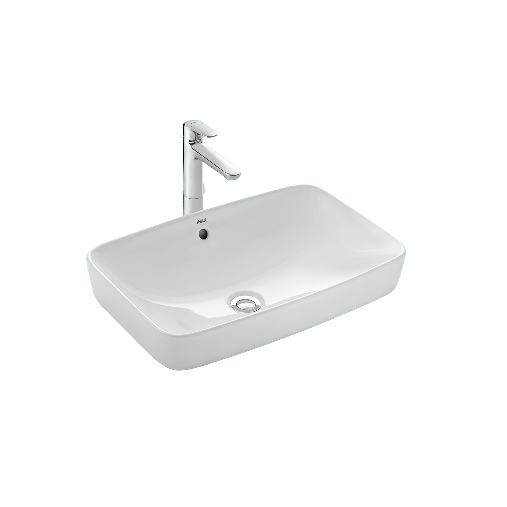
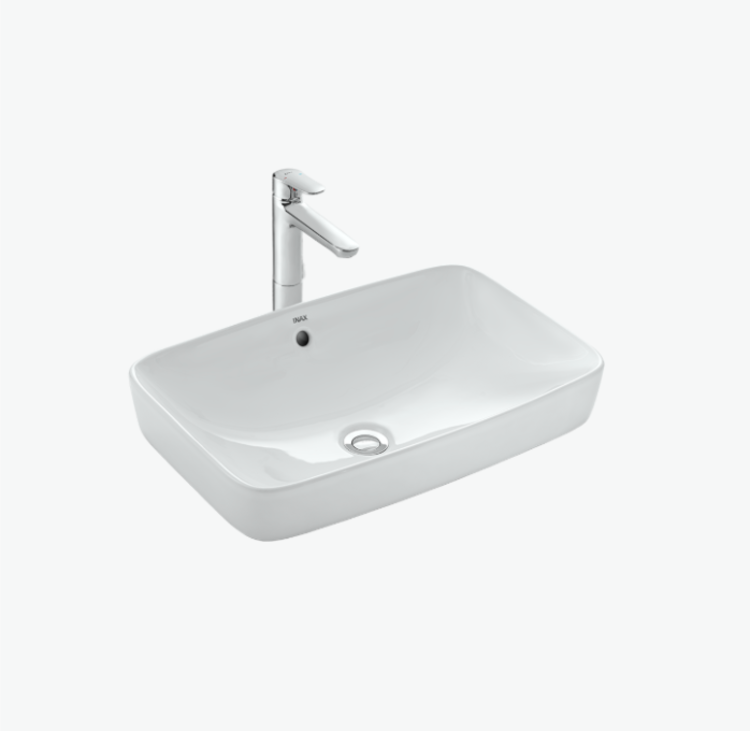
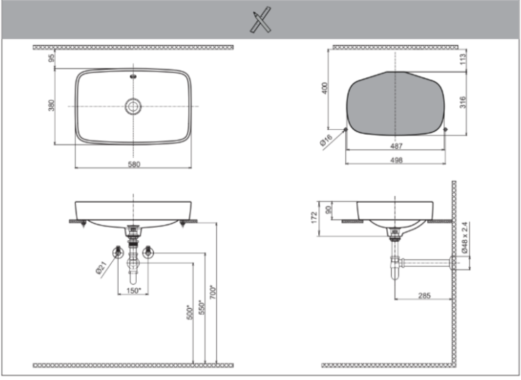

Chậu rửa đặt bàn AL-299V không chỉ là một vật dụng vệ sinh thông thường mà là một tuyệt tác sứ trắng mang lại vẻ đẹp sang trọng, trang nhã cho không gian của bạn. Thuộc thương hiệu INAX hàng đầu Nhật Bản, AL-299V là sự kết hợp hoàn hảo giữa thiết kế tinh tế và công nghệ vật liệu đột phá, hứa hẹn một trải nghiệm sử dụng vượt trội, bền bỉ cùng thời gian.Thiết kế chậu rửa đặt bàn AL-200V sang trọng, tinh tếChậu rửa AL-299V sở hữu kiểu dáng đặt nổi trên bàn, một phong cách thiết kế đang rất được ưa chuộng. Kiểu dáng này không chỉ tạo điểm nhấn thị giác độc đáo, tách biệt chậu rửa khỏi mặt bàn mà còn mang lại cảm giác hiện đại và cao cấp, biến khu vực lavabo thành trung tâm thu hút ánh nhìn trong phòng tắm.Lavabo đặt bàn AL-299V được tạo hình với các góc bo mềm mại, loại bỏ sự thô cứng của các thiết kế truyền thống. Sự mềm mại này không chỉ đẹp mắt mà còn an toàn hơn khi sử dụng.Với kích thước lavabo cân đối 380 (Sâu) x 580 (Rộng) x 172 (Cao) mm, sản phẩm có dung tích lớn tiện dụng, hạn chế tối đa việc nước bắn ra ngoài khi sử dụng, đồng thời cung cấp không gian rửa thoải mái, kể cả khi bạn cần giặt nhẹ một vài món đồ. Ngoài ra, màu sắc trắng thuần khiết của sứ càng làm nổi bật lên vẻ đẹp tinh giản và dễ dàng phối hợp với mọi chất liệu và màu sắc nội thất khác.Công nghệ AQUA CERAMIC độc quyền, chống bám bẩn tối ưuĐiểm nhấn công nghệ làm nên giá trị của AL-299V chính là Công nghệ AQUA CERAMIC độc quyền của INAX. Đây là một phát minh đột phá đã được chứng minh có khả năng duy trì độ sạch sẽ gần như tuyệt đối, giúp bề mặt sứ trắng sạch bền bỉ đến 100 năm.Theo đó, công nghệ AQUA CERAMIC tạo ra một bề mặt siêu ưa nước (hydrophilic) và ngăn chặn sự tích tụ của cặn nước cứng. Điều này khiến nước dễ dàng cuốn trôi mọi vết bẩn, đặc biệt là các vết bẩn cứng đầu do cặn bám, bọt xà phòng gây ra.Ngoài ra, bề mặt chậu rửa được bảo vệ tối đa, giữ nguyên độ trắng sáng ban đầu, không bị ố vàng hay xỉn màu theo thời gian, ngay cả trong điều kiện sử dụng thường xuyên.Video giới thiệu công nghệ Aqua Ceramic độc quyền của INAXChất liệu sứ cao cấpChậu rửa đặt bàn AL-299V được chế tạo từ chất liệu sứ cao cấp, nung ở nhiệt độ tiêu chuẩn, mang lại độ bền chắc vượt trội, chống trầy xước và chịu được va đập nhẹ.Bên cạnh đó, sản phẩm còn được trang bị lỗ xả tràn tiện lợi. Tính năng này giúp ngăn chặn tình trạng nước bị tràn ra ngoài nếu bạn vô tình để quên vòi nước mở, đảm bảo an toàn cho sàn nhà và các vật dụng xung quanh, đặc biệt quan trọng trong các gia đình bận rộn.Để hoàn thiện vẻ đẹp hiện đại và sự đồng bộ chức năng, INAX gợi ý sản phẩm đi kèm là sen vòi đơn LFV-5012S. Sự kết hợp này không chỉ tạo nên tính thẩm mỹ cao mà còn đảm bảo sự tương thích tối ưu giữa chậu và vòi lavabo, mang lại dòng chảy đẹp và tiện nghi khi sử dụng.Bản vẽ Chậu rửa đặt bàn AL-299VFile hướng dẫn lắp đặt chậu rửa đặt bàn AL-299VHDLD AL-299V.pdfThông số kỹ thuậtChất liệuSứ cao cấpKiểu dángDạng đặt nổi trên bàn sang trọng, trang nhãKích thước380 x 580 x 172 (mm) (Sâu x Rộng x Cao)Tính năng- Công nghệ AQUA CERAMIC 100 năm trắng sạch - Lỗ xả tràn tiện lợiThương hiệuINAXThiết kếHiện đại, tinh tế với các góc bo mềm mại, dung tích lớn tiện dụngMàu sắcTrắngKhác- Gợi ý sản phẩm đi kèm: sen vòi đơn LFV-5012S - Hotline tư vấn và bảo hành: 18006633
Chậu rửa đặt bàn AL-299V
Chậu rửa thương hiệu INAX.
Đã cập nhật danh sách yêu thích.
DANH MỤC: Chậu rửa
MÃ SẢN PHẨM: AL-299V
DEPTH: 380mm
HEIGHT: 172mm
WIDTH: 580mm
Chậu rửa đặt bàn AL-299V không chỉ là một vật dụng vệ sinh thông thường mà là một tuyệt tác sứ trắng mang lại vẻ đẹp sang trọng, trang nhã cho không gian của bạn. Thuộc thương hiệu INAX hàng đầu Nhật Bản, AL-299V là sự kết hợp hoàn hảo giữa thiết kế tinh tế và công nghệ vật liệu đột phá, hứa hẹn một trải nghiệm sử dụng vượt trội, bền bỉ cùng thời gian.Thiết kế chậu rửa đặt bàn AL-200V sang trọng, tinh tếChậu rửa AL-299V sở hữu kiểu dáng đặt nổi trên bàn, một phong cách thiết kế đang rất được ưa chuộng. Kiểu dáng này không chỉ tạo điểm nhấn thị giác độc đáo, tách biệt chậu rửa khỏi mặt bàn mà còn mang lại cảm giác hiện đại và cao cấp, biến khu vực lavabo thành trung tâm thu hút ánh nhìn trong phòng tắm.Lavabo đặt bàn AL-299V được tạo hình với các góc bo mềm mại, loại bỏ sự thô cứng của các thiết kế truyền thống. Sự mềm mại này không chỉ đẹp mắt mà còn an toàn hơn khi sử dụng.Với kích thước lavabo cân đối 380 (Sâu) x 580 (Rộng) x 172 (Cao) mm, sản phẩm có dung tích lớn tiện dụng, hạn chế tối đa việc nước bắn ra ngoài khi sử dụng, đồng thời cung cấp không gian rửa thoải mái, kể cả khi bạn cần giặt nhẹ một vài món đồ. Ngoài ra, màu sắc trắng thuần khiết của sứ càng làm nổi bật lên vẻ đẹp tinh giản và dễ dàng phối hợp với mọi chất liệu và màu sắc nội thất khác.Công nghệ AQUA CERAMIC độc quyền, chống bám bẩn tối ưuĐiểm nhấn công nghệ làm nên giá trị của AL-299V chính là Công nghệ AQUA CERAMIC độc quyền của INAX. Đây là một phát minh đột phá đã được chứng minh có khả năng duy trì độ sạch sẽ gần như tuyệt đối, giúp bề mặt sứ trắng sạch bền bỉ đến 100 năm.Theo đó, công nghệ AQUA CERAMIC tạo ra một bề mặt siêu ưa nước (hydrophilic) và ngăn chặn sự tích tụ của cặn nước cứng. Điều này khiến nước dễ dàng cuốn trôi mọi vết bẩn, đặc biệt là các vết bẩn cứng đầu do cặn bám, bọt xà phòng gây ra.Ngoài ra, bề mặt chậu rửa được bảo vệ tối đa, giữ nguyên độ trắng sáng ban đầu, không bị ố vàng hay xỉn màu theo thời gian, ngay cả trong điều kiện sử dụng thường xuyên.Video giới thiệu công nghệ Aqua Ceramic độc quyền của INAXChất liệu sứ cao cấpChậu rửa đặt bàn AL-299V được chế tạo từ chất liệu sứ cao cấp, nung ở nhiệt độ tiêu chuẩn, mang lại độ bền chắc vượt trội, chống trầy xước và chịu được va đập nhẹ.Bên cạnh đó, sản phẩm còn được trang bị lỗ xả tràn tiện lợi. Tính năng này giúp ngăn chặn tình trạng nước bị tràn ra ngoài nếu bạn vô tình để quên vòi nước mở, đảm bảo an toàn cho sàn nhà và các vật dụng xung quanh, đặc biệt quan trọng trong các gia đình bận rộn.Để hoàn thiện vẻ đẹp hiện đại và sự đồng bộ chức năng, INAX gợi ý sản phẩm đi kèm là sen vòi đơn LFV-5012S. Sự kết hợp này không chỉ tạo nên tính thẩm mỹ cao mà còn đảm bảo sự tương thích tối ưu giữa chậu và vòi lavabo, mang lại dòng chảy đẹp và tiện nghi khi sử dụng.Bản vẽ Chậu rửa đặt bàn AL-299VFile hướng dẫn lắp đặt chậu rửa đặt bàn AL-299VHDLD AL-299V.pdfThông số kỹ thuậtChất liệuSứ cao cấpKiểu dángDạng đặt nổi trên bàn sang trọng, trang nhãKích thước380 x 580 x 172 (mm) (Sâu x Rộng x Cao)Tính năng- Công nghệ AQUA CERAMIC 100 năm trắng sạch - Lỗ xả tràn tiện lợiThương hiệuINAXThiết kếHiện đại, tinh tế với các góc bo mềm mại, dung tích lớn tiện dụngMàu sắcTrắngKhác- Gợi ý sản phẩm đi kèm: sen vòi đơn LFV-5012S - Hotline tư vấn và bảo hành: 18006633
DANH MỤC: Chậu rửa
MÃ SẢN PHẨM: AL-299V
DEPTH: 380mm
HEIGHT: 172mm
WIDTH: 580mm